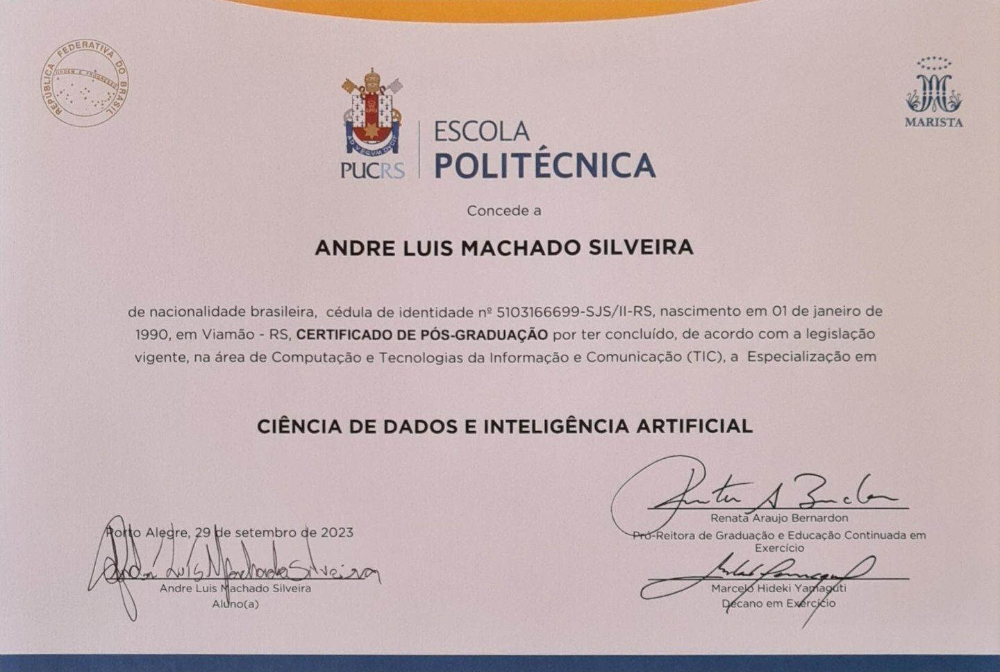
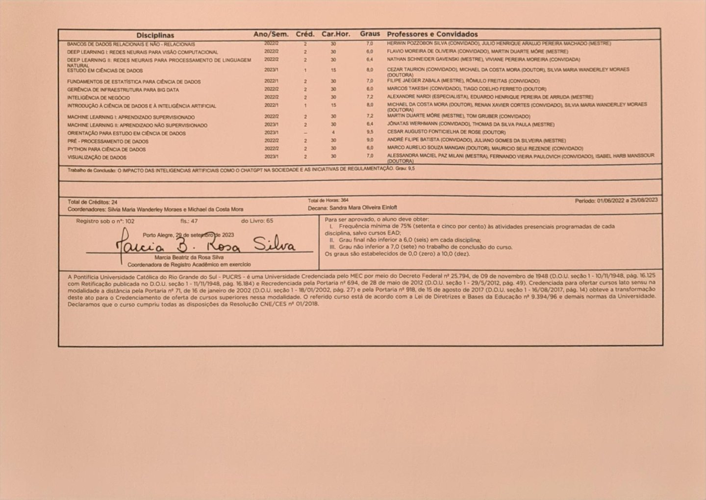
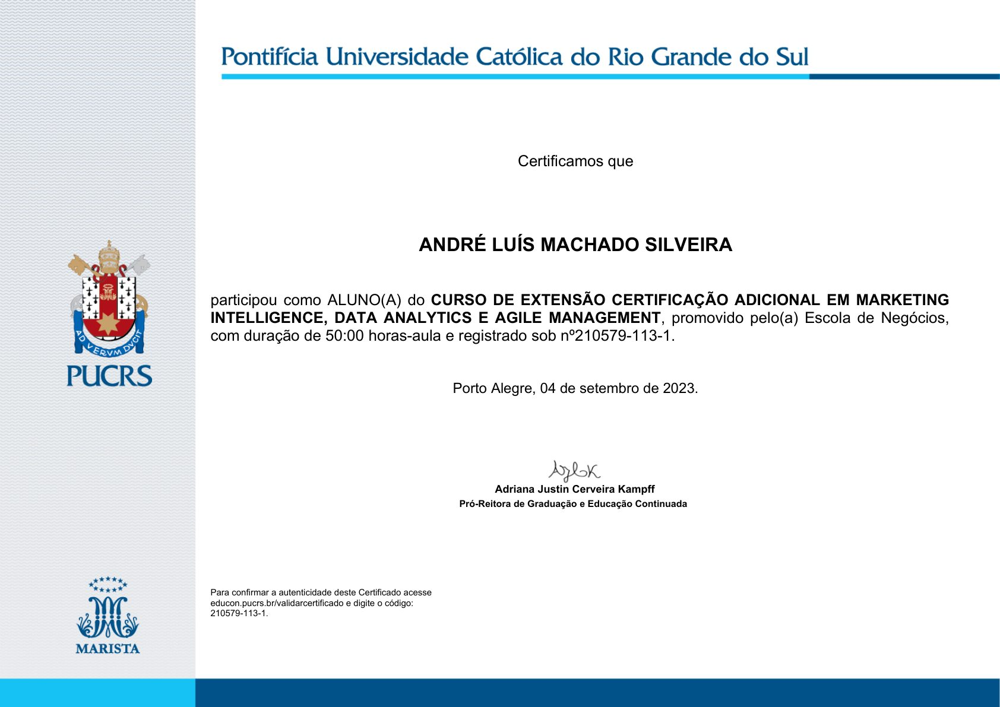
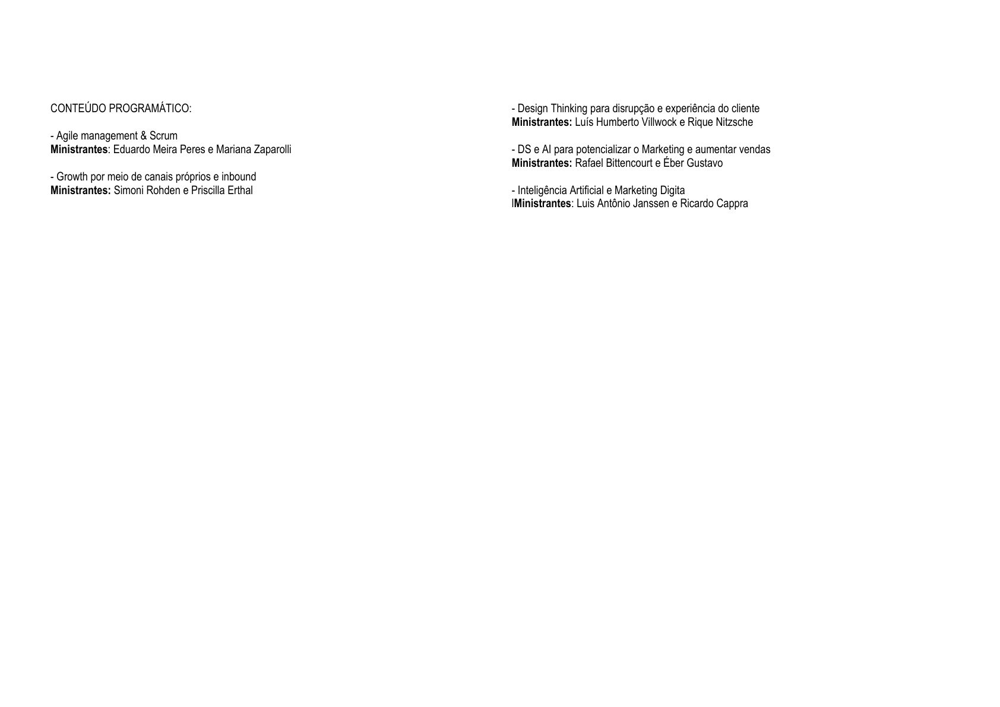

MAI 2025 — JAN 2026
Infinilabs
Business Analytics · Parceria Dell Technologies
Migração de ambientes analíticos (SAP, Oracle, Azure, SharePoint) para Databricks. Arquitetura em camadas Bronze/Silver/Gold para +20 anos de dados (~1,5B linhas). Criação de fontes via Dataflows e Direct Lake (Microsoft Fabric). Transição de Qlik para Power BI. Rituais ágeis diários.
DatabricksMicrosoft FabricDirect LakePower BIAzureDell
Arquitetura · Dell Technologies Gold Partner
Fontes Legadas
SAP
Oracle
Azure
SharePoint
QLIK → POWER BI
→
Databricks Platform
🥇 GOLD · Business
🥈 SILVER · Validated
🥉 BRONZE · Raw
DELL Technologies Partner
→
Analytics Moderno
Microsoft Fabric
Power BI
Dataflows
Direct Lake
GOVERNANÇA &
CONSISTÊNCIA
DOC &
VERSIONAMENTO
FEV — MAI 2025
Unimed
Porto Alegre
Business Analytics
Migração de dashboards em produção de Qlik para Power BI sprint a sprint. Transição de conexões diretas com Databricks para Dataflows, reduzindo dependências técnicas e melhorando governança. Desenvolvimento de visualizações escaláveis e otimizadas.
Qlik → Power BIDataflowsDatabricksAgile
ABR — AGO 2024
Linha por Linha
Dados · Big Data ENEM · 15 func.
Análise exploratória e descritiva dos Microdados do ENEM — maior exame nacional de ensino médio. Big Data: 86 milhões de linhas de inscritos, 15 anos de dados históricos. Dashboard demográfico, socioeconômico e de desempenho. Aplicativo de Formulários com Níveis de Acesso, responsivo Mobile/Desktop em NoCode.
Big Data86M linhasENEMPower BIPythonNoCode

▶
JAN — JUN 2024
Quattrus
Consultoria Estratégica · MVP & LLMs · 40 func.
Desenvolvimento de MVP com infraestrutura de modelos LLM (GCP, ChatGPT). Chatbot de autoatendimento com recomendações, classificação de perfil e análise de sentimentos. Drag and drop para extração de dados estruturados/semiestruturados com insights de negócio. Automação Python: dashboards legados e geração automatizada de PPTs. Modelos para gráficos em múltiplos idiomas com categorização e rankings. Consultas SQL no Azure, revisão e melhoria de métricas em produção.
GCPChatGPT APILLMsPythonAzure SQLPower BI
OUT 2022 — JUN 2023
Sistema FIERGS
Analista Corp. Especialista de Dados Pleno
4.000+ colaboradores. Módulo de BI no backlog gerencial, integridade de KPIs entre sistemas legados e novos. Dashboards Power BI, análises Excel, notebooks Python. Perfis hierárquicos de acesso. Conformidade LGPD em dados sensíveis.
Power BIPythonExcelLGPDLG SaaS

▶
JUN 2022 — SET 2023
PUCRS — Escola Politécnica
Especialização em Ciência de Dados e Inteligência Artificial
Especialização lato sensu — Computação e Tecnologias da Informação e Comunicação. 24 créditos · 364 horas. TCC:
O Impacto das IAs como o ChatGPT na Sociedade e Iniciativas de Regulamentação (nota 9,5) —
acessar no Google Drive.
Data ScienceIAMachine LearningDeep LearningPythonPUCRS
Certificado PUCRS


Certificações 2023
· Agile Management & Scrum
· Growth por canais próprios e inbound
· Design Thinking para disrupção e experiência do cliente
· DS e AI para potencializar Marketing e aumentar vendas
· Inteligência Artificial e Marketing Digital
Certificados


SET 2021 — MAI 2022
Futuro Previdência
Analista de Dados · Financeiro / BACEN
Monitoramento de Milhões em Crédito Consignado em todo o Brasil. Balancete Financeiro e ciclo de centenas de dados tombados e validados para novo sistema. Dashboards em tempo real integrando APIs e SharePoint (crédito, inadimplência, financeiro, produção). VBA para automação de rotinas operacionais. Adequações regulatórias BACEN: CRM, SAC, gestão de reclamações. Chatbot com integrações WhatsApp e redes sociais.
VBAPower BISharePointBACENAPIs

▶
ABR — SET 2021
Refrigeração Dufrio
Analista de Inteligência de Negócios
Supply Chain em tempo real: milhares de pedidos rastreados e atualizados a cada 30 minutos para acompanhamento nos 4 CDs de Distribuição. +2 mil funcionários, +20 lojas nacionais. Ciclo completo de BI: extração, modelagem, visualização e automação. KPIs estratégicos de planejamento, vendas, logística, serviços e pessoas — reportados em nível executivo.
SQL ServerPower BIDynamics 365ERP

▶
FEV 2018 — OUT 2020
Eichenberg
& Lobato
Analista de Relatórios · Advocacia
Ciclo completo de BI: ERP (SQL), XMLs públicos, APIs Banco Central. VBA para automação e limpeza de dados. Identificou +10 mil processos passíveis de honorários via Power BI — impacto direto no fluxo de caixa. Dashboards executivos para sócios e diretores.
VBAPower BISQLAPIs BCBXML
2015 — 2019
Estágios & Formação
Ball Corporation · Grupo Volpato · Graduação
Ball Corporation: controle de estoque e consumo via SAP, KPIs de produção para supervisores e gerência. Grupo Volpato: agenda comercial, indicadores de desempenho. Graduação em Administração com Prouni 100%.
SAPExcelKPIProuni 100%
2008 — 2014
Carreira Comercial
Banco Cacique · Agiplan Financeira · Tramonto Fiat
Crédito consignado e pré-análise documental (Banco Cacique). Retenção de contratos no setor público federal/estadual — reconhecido como top performer em receita (Agiplan). Gestão completa do ciclo de vendas automotivas (Tramonto Fiat).
CréditoSerasa/SPCCRMVendas